Pharmaceutical chemistry is an interdisciplinary science combining organic chemistry, biochemistry, and pharmacology to design, synthesize, and develop biologically active agents. It focuses on the discovery, optimization, and analysis of drugs, including studying Structure-Activity Relationships (SAR) and ensuring the quality and efficacy of therapeutic agents.Pharmaceutical chemistry is an interdisciplinary science that merges principles of organic, inorganic, and analytical chemistry with pharmacology and biology to design, develop, and synthesize new drug molecules. It focuses on the fundamental study of drug composition, structure-activity relationships (SAR), and the optimization of chemical structures to enhance therapeutic efficacy while reducing toxicity. Beyond synthesis, this field is critical for establishing quality control standards, including limit tests for impurities to ensure the purity, potency, and stability of pharmaceutical products. By understanding how chemical structures interact with biological systems—including absorption, distribution, metabolism, and excretion (ADME)—pharmaceutical chemists create targeted treatments for various diseases, bridging the gap between basic chemical research and clinical applications.
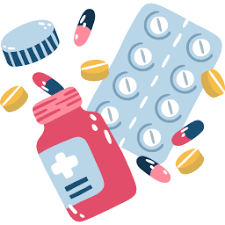
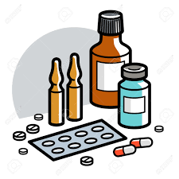

Volumetric analysis (titrimetry) in pharmaceutical chemistry is a quantitative technique used to determine an unknown analyte concentration by measuring the precise volume of a standard reagent (titrant) required to complete a reaction. It relies on rapid, stoichiometric reactions—primarily acid-base, redox, complexometric, or precipitation—where an indicator detects the end-point of reaction. Key components include using primary standards for standardization, precise calibration of glassware (burettes, pipettes), and calculating purity based on stoichiometry and volume Volumetric analysis, or titrimetry, is a fundamental quantitative technique in pharmaceutical chemistry used to determine the concentration of an analyte by measuring the precise volume of a standard titrant required to complete a stoichiometric reaction. It relies on accurate glassware, such as burettes and pipettes, and well-understood chemical reactions—including acid-base, redox, complexometric, and precipitation—that are rapid and go to completion. The process involves adding a standardized titrant to an analyte solution until an indicator signals the endpoint (the point where the reaction is complete), which should coincide with the theoretical equivalence point. Key concepts include using primary standards to prepare accurate solutions and calculating the drug's content through stoichiometric calculations. It is highly valued for quality control, determining the purity of pharmaceutical ingredients, and analyzing drugs in dosage forms.
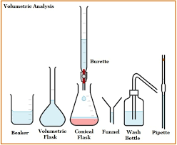
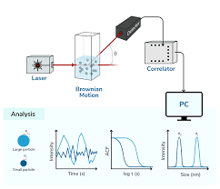
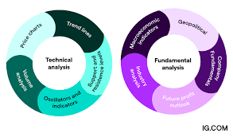
Biopharmaceuticals, often referred to as biologics or biological medical products, represent a transformative class of therapeutic agents that are manufactured in, extracted from, or semi-synthesized using living biological sources, including microorganisms, plant cells, and animal cells. Unlike traditional small-molecule pharmaceuticals, which are created through conventional chemical synthesis and have well-defined, simple structures, biopharmaceuticals are characterized by their high molecular complexity and large size. These products, which include recombinant therapeutic proteins, monoclonal antibodies (mAbs), vaccines, gene therapies, and cellular therapies, typically mimic natural biological molecules, allowing them to target specific molecular pathways with high precision, often resulting in increased efficacy and fewer adverse effects. The production of these drugs is exceptionally intricate, relying on advanced biotechnological methods such as recombinant DNA technology and cell culture, where the manufacturing process is, in many ways, considered inseparable from the final product's identity.The therapeutic applications of biopharmaceuticals are diverse, having fundamentally shifted the management of diseases that were previously considered difficult to treat or incurable, such as many types of cancer, rheumatoid arthritis, Crohn’s disease, and multiple sclerosis. Monoclonal antibodies currently dominate this sector, holding over half of the market share, due to their ability to act as targeted, "smart" drugs that mark cancer cells for immune destruction. Despite their therapeutic advantages, biopharmaceuticals face significant hurdles, including high manufacturing costs, susceptibility to denaturation, and potential immunogenicity, where the body's immune system may recognize the drug as foreign and reduce its effectiveness. Furthermore, the stringent regulatory environment—governed by bodies like the FDA and EMA—demands rigorous preclinical and clinical testing to ensure safety, quality, and efficacy before market approval. As patents for early biologics expire, the rise of "biosimilars"—highly similar,, follow-on versions—is helping to improve access and reduce costs, although creating exact replicas is impossible due to the inherent complexity of biological production. The industry continues to evolve, with future trends pointing toward personalized medicine, mRNA platforms, and the integration of artificial intelligence (AI) to accelerate drug discovery and optimize production workflows.
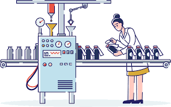
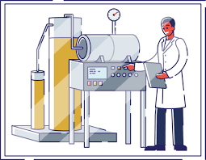
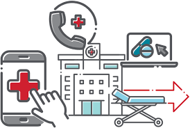
Biotechnology is the broad, interdisciplinary field that leverages cellular and biomolecular processes, living organisms, or systems to develop innovative products, technologies, and solutions aimed at improving human life and environmental health. Spanning from ancient fermentation techniques (e.g., bread and cheese making) to modern genetic engineering, it integrates biology with technologies like CRISPR-Cas9, tissue culture, and bioinformatics to manipulate DNA, produce medicines, and create sustainable solutions. Key application areas include red biotechnology (healthcare: gene therapy, antibiotics, vaccine development), green biotechnology (agriculture: genetically modified crops, pest resistance), white biotechnology (industrial: bio-based chemicals and biofuels), and grey/blue biotechnology (environmental: bioremediation and cleaning contaminated sites). Ultimately, this field seeks to address complex global challenges like disease, hunger, and climate change, while navigating ethical and regulatory debates regarding the modification of living organisms
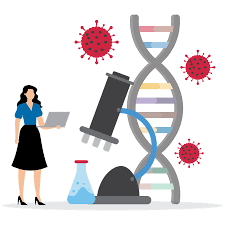
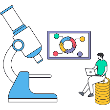
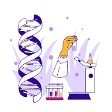
Microbiology is the comprehensive scientific study of microorganisms, which are microscopic entities too small to be seen clearly with the naked eye, including bacteria, viruses, fungi, protozoa, algae, and archaea. These diverse organisms, which are often single-celled or acellular, are ubiquitously distributed, thriving in soil, air, water, and as symbiotic or pathogenic residents within the human body. Microbiology is foundational to understanding the biosphere, as microbes are the oldest life forms, dating back over 3.4 billion years, and play an indispensable role in global nutrient cycling, such as fixing atmospheric nitrogen and decomposing organic matter to recycle essential elements. While some microorganisms are notorious for causing diseases—such as pathogens behind influenza or tuberculosis—the vast majority are harmless or incredibly beneficial, essential for industries like food production (cheese, yogurt, bread), biotechnology (producing insulin and antibiotics), and environmental science (bioremediation of oil spills).

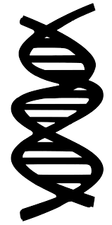
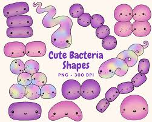
This article is about the type of treatment. For the journal, see Pharmacotherapy (journal). Pharmacotherapy, also known as pharmacological therapy or drug therapy, is defined as medical treatment that utilizes one or more pharmaceutical drugs to improve ongoing symptoms (symptomatic relief), treat the underlying condition, or act as a prevention for other diseases (prophylaxis).[1] It can be distinguished from therapy using surgery (surgical therapy), radiation (radiation therapy), movement (physical therapy), or other modes. Among physicians, sometimes the term medical therapy refers specifically to pharmacotherapy as opposed to surgical or other therapy; for example, in oncology, medical oncology is thus distinguished from surgical oncology. Today's pharmacological therapy has evolved from a long history of medication use, and it has changed most rapidly in the last century due to advancements in drug discovery. The therapy is administered and adjusted by healthcare professionals according to the evidence-based guidelines and the patient's health condition. Personalized medicine also plays a crucial role in pharmacological therapy. Personalized medicine, or precision medicine, takes account of the patient's genetic variation, liver function, kidney function, etc, to provide a tailor-made treatment for a patient. In pharmacological therapy, pharmacists will also consider medication compliance. Medication compliance, or medication adherence, is defined as the degree to which the patient follows the therapy that is recommended by the healthcare professionals.
The use of medicinal substances can be traced back to 4000 BC in the Sumer civilization.[3] Healers at the time (called apothecaries), for example, understood the application of opium for pain relief.[4] The history of natural remedies can also be found in other cultures, including traditional Chinese medicine in China and Ayurvedic medicine in India, which are still in use nowadays.[5] Dioscorides, a 1st -century Greek surgeon, described more than six hundred animals, plants, and their derivatives in his medical botany, which remained the most influential pharmacopeia for fourteen hundred years.[6] Besides substances derived from living organisms, metals, including copper, mercury, and antimony, were also used as medical therapies.[6] They were said to cure various diseases during the late Renaissance. In 1657, tartar emetic, which is an antimony compound, was credited with curing Louis XIV of typhoid fever.[6] The drug was also administered intravenously for the treatment of schistosomiasis in the 20th century.[7] However, due to the concern over acute and chronic antimony poisoning, the role of tartar emetic as an antischistosomal agent was gradually replaced after the advent of praziquantel.[7] Other than using natural products, humans also learned to compound medicine by themselves. The first pharmaceutical text was found on clay tablets from the Mesopotamians, who lived around 2100 BC.[5] Later in the 2nd century AD, compounding was formally introduced by Galen as "a process of mixing two or more medicines to meet the individual needs of a patient".[5] Initially, compounding was only done by individual pharmacists, but in the post-World War II period, pharmaceutical manufacturers surged in number and took over the role of making medicine.[3] Meanwhile, there was a marked increase in pharmaceutical research, which led to a growing number of new drugs.[3] Most drug discovery milestones were made in the last hundred years, from antibiotics to biologics,[5] contributing to the foundation of current pharmacological therapy.
Most drugs were discovered by empirical means, including observation, accident, and trial and error.[6] One famous example is the discovery of penicillin, the first antibiotic in the world. The substance was discovered by Alexander Fleming in 1928 after a combination of unanticipated events occurred in his laboratory during his summer vacation.[8] The Penicillium mold on the petri dish was believed to secrete a substance (later named "penicillin") that inhibited bacterial growth.[8] Large pharmaceutical companies then started to establish their microbiological departments and search for new antibiotics.[9] The screening program for antimicrobial compounds also led to the discovery of drugs with other pharmacological properties, such as immunosuppressants like Cyclosporin A.[9]
The discovery of penicillin was a serendipitous (i.e. chance) discovery. Another, more advanced approach to drug discovery is rational drug design. The method is underpinned by an understanding of the biological targets of the drugs, including enzymes, receptors, and other proteins. In the late 19th century, Paul Ehrlich observed the selective affinity of dyes for different tissues and proposed the existence of chemoreceptors in our bodies.[9][10] Receptors were believed to be the specific binding sites for drugs.[9] The drug-receptor recognition was described as a key-and-lock interplay by Emil Fischer in the early 1890s.[11] It was later found that the receptors can either be stimulated or inhibited by chemotherapeutic agents to attain the desired physiological response.[9] Once the ligand interacting with the target macromolecule is identified, drug candidates can be designed and optimized based on the structure-activity relationship.[11] Nowadays, artificial intelligence is employed in drug design to predict drug-protein interactions, drug activity, the 3D configuration of proteins, etc.[11]
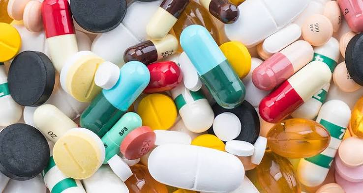
Introducation of Pharmaceutical Chemistry
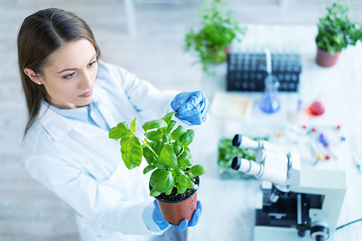
Introducation of Pharamcognosy Drugs
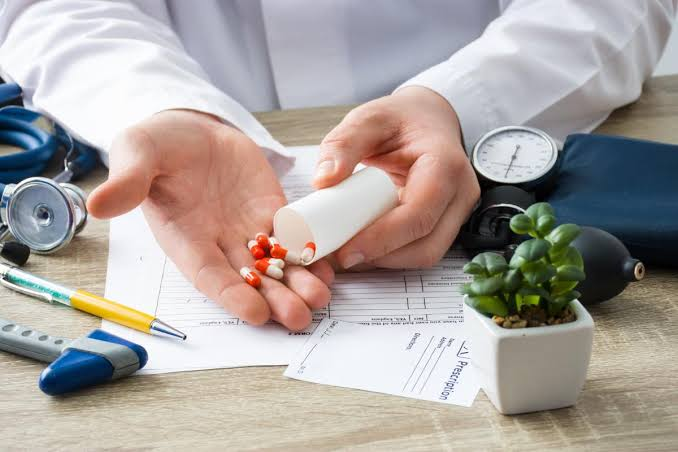
Introduction of Pharmacotherapy/ Pharmacotherapeutics
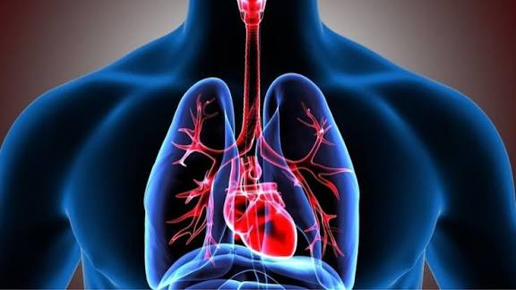
Introducation of Human Anatomy and Physiology The Biology Corner
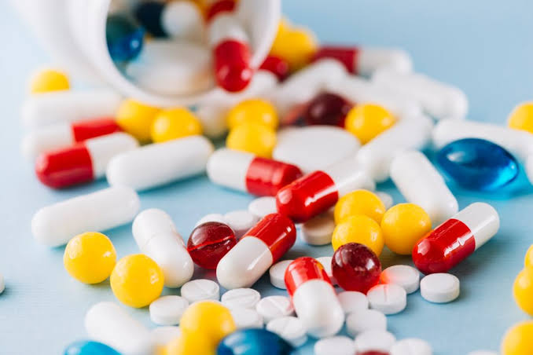
Introducation of Pharmacology Drug
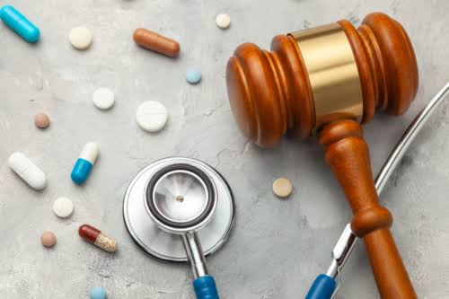
Introducation of Pharmacy Law & Ethics
Trusted since 2007, Tushar Cyber Cafe & Institute offers practical, job-oriented courses
with expert guidance, hands-on training, flexible timings, and affordable fees—focused on building
real skills and career success.
At Tushar Cyber Cafe & Institute
we don’t just teach—we prepare you for success.